Exercise 1 — Creating a Sales Order in SAP from a Salesforce Opportunity
A sales rep just closed a deal in Salesforce. Someone — or something — now has to create the matching sales order in SAP so the business can fulfill it. In this exercise you build that "something": a Boomi integration process that reads a closed Salesforce opportunity and creates a Sales Order in SAP S/4HANA by calling the standard SAP function BAPI_SALESORDER_CREATEFROMDAT2.
How this works under the hood
The Boomi for SAP connector you'll use is a branded connector — it doesn't screen-scrape SAP or log into the SAP GUI. It talks to Boomi for SAP Core, a certified NetWeaver add-on installed inside the SAP system (on-premises or private cloud). The Core exposes SAP's standard function library — including every BAPI — as importable operations, so calling an ABAP function from an integration becomes a point-and-click configuration instead of custom development.
What we set up for you
- The SAP connection — the SAP S4 Connection component is pre-configured and points at the workshop's Boomi for SAP Core. You select it; you never handle SAP credentials.
- A sample process skeleton — the shapes are on the canvas; you configure each one.
- Product master data — the products in the Salesforce opportunity are already synced into SAP. That matters: SAP will only accept an order for a material it knows, so in any real implementation product master sync happens before order integration.
- A realistic Salesforce payload — a Message shape holds the XML a live Salesforce connection would deliver, so you can build and test end-to-end without waiting on a rep to close a deal.
- How the Boomi for SAP connector calls BAPIs through the Boomi for SAP Core
- How to read a CRM payload and map it to the SAP request structure
- Why SAP needs leading zeros, line-item increments of 10, and hardcoded org values — and how to handle each
- How to read the BAPI response and surface the created Sales Document number
Log In & Copy the Sample Process
-
1
Log in to the Boomi training account using the credentials below.
Credentials
UserProvided by trainerPasswordProvided by trainer
Boomi login screen -
2
In the Trainer folder, locate the sample process named Create SO SFDC to SAP Sample. Right-click the process and select Copy to folder, choosing your USERXX folder as the destination.
Why you're copying itEveryone in the workshop shares this account. Copying the sample into your own USERXX folder gives you a private working copy — you can configure, break, and re-test it without touching anyone else's work, and the trainer's original stays pristine for the next group.

Copy process to USERXX folder -
3
Navigate to your USERXX folder. Double-click the copied process (Create SO SFDC to SAP USERXX) to open it on the canvas.
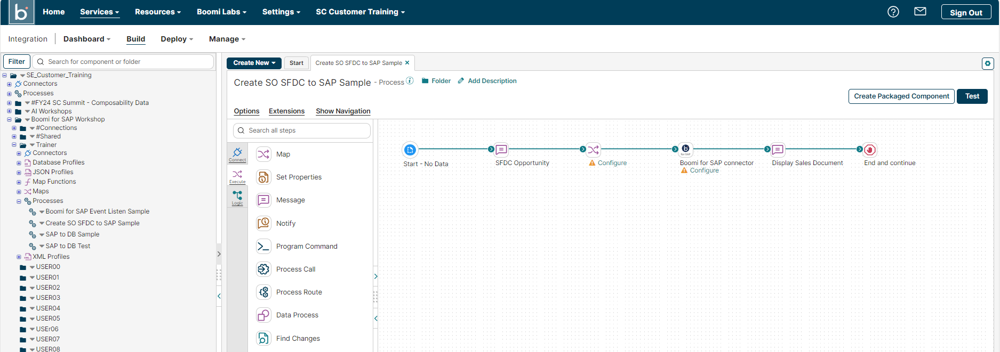
Process opened on canvas
Read the Salesforce Payload
The canvas shows the pre-built process skeleton. Before configuring anything, take a minute to understand the data you're about to move — the whole exercise is easier when you know what's in the payload and what should come out the other side.
-
1
Familiarize yourself with the shapes on the canvas:
- SFDC Opportunity — a Message shape holding the sample Salesforce XML
- Map — transforms the Salesforce XML into the SAP BAPI request
- Boomi for SAP — calls the BAPI on SAP
- Display Sales Document — shows the SAP document number that comes back
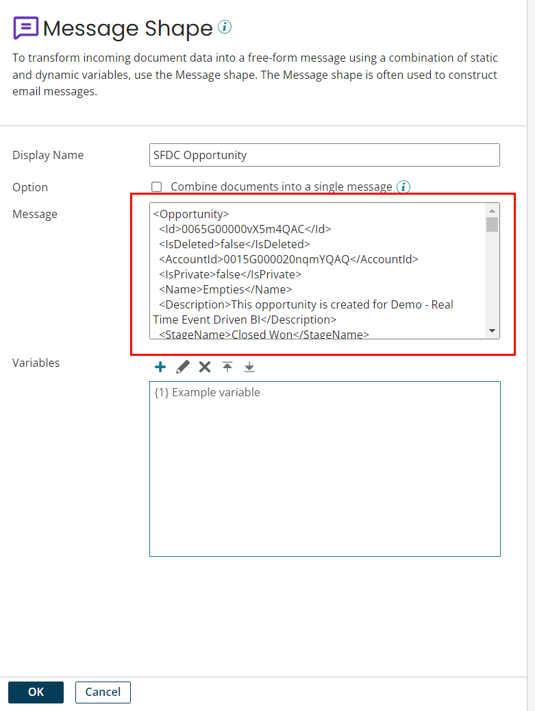
Process canvas showing the four shapes -
2
Click the SFDC Opportunity Message shape and read through the XML payload. Do not change it — it's your test input. As you scan it, find these elements:
What to find in the XML What it becomes in SAP Opportunity → Id— the Salesforce opportunityThe customer PO reference on the order header The account / customer number The sold-to party on the order OpportunityLineItems— each line'sProductCodeandQuantityThe order line items: materials and quantities Why this payload mattersThis is completely standard CRM XML — if your company runs NetSuite, HubSpot, or ServiceNow instead of Salesforce, the payload would look nearly identical and this whole exercise would work the same way. Salesforce is sending the deal; SAP is creating the order.
Note the product codes in the line items — those exact products will appear on the SAP sales order at the end of this exercise. They can only do that because product master data is already synced between Salesforce and SAP; you can't order a material SAP has never heard of.
Trainer momentIn production this XML wouldn't sit in a Message shape — a Salesforce listener would deliver it the instant an opportunity goes Closed Won. Your trainer will show the same opportunity live in Salesforce so you can see where this payload really comes from.
Configure the Boomi for SAP Shape
This shape is where the integration actually reaches SAP. You'll do three things: pick which SAP system to talk to (the connection — it points at a specific Boomi for SAP Core), pick what to do there (the operation — importing the BAPI_SALESORDER_CREATEFROMDAT2 function), and let the import generate request/response profiles that mirror the BAPI's exact structure — every field, table, and length as SAP defines it.
-
1
On the canvas, find the Boomi for SAP shape and click Configure.
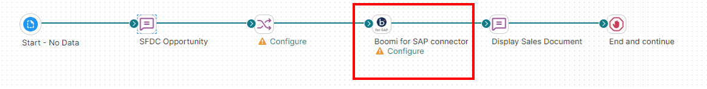
Boomi for SAP shape on canvas -
2
In the connector configuration, select SAP S4 Connection from the drop-down and make sure Action is
FUNCTION.The connection was pre-built for the workshop — it holds the address of the Boomi for SAP Core in the demo SAP system. Choosing a connection = choosing which SAP environment this shape calls. The
FUNCTIONaction means "invoke a function module / BAPI" (in Exercise 2 you'll useQUERYagainst a Table Service instead).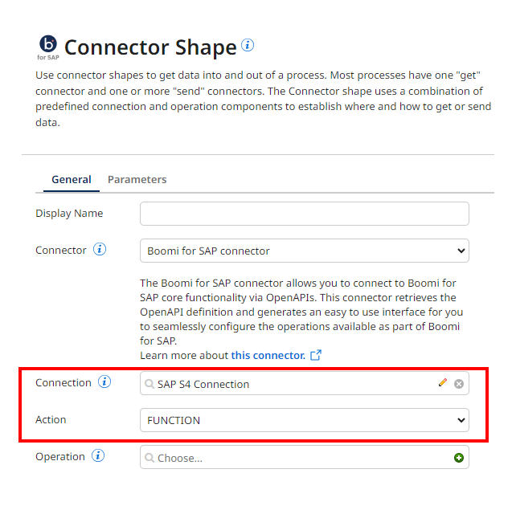
Select SAP S4 Connection -
3
Create a new operation by clicking the + icon next to the Operation field.
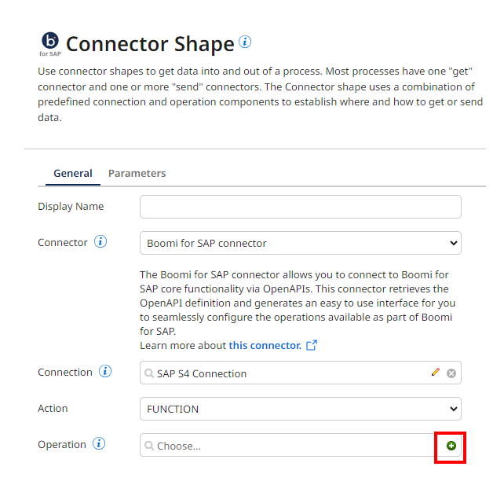
Add new operation -
4
On the New Operation screen, enter a name (e.g.,
Create SO USERXX) and click Import.
Name the operation -
5
In the Import Wizard, verify all fields are populated and click Next. The wizard is now browsing the live function catalog of the SAP system through the Core.

Import Wizard — first screen -
6
Select BAPI_SALESORDER_CREATEFROMDAT2 from the function drop-down and click Next.
Know your BAPI —BAPI_SALESORDER_CREATEFROMDAT2is SAP's standard function for creating sales orders. Its full signature — every import parameter and table, with which are required — is documented on the SAP datasheet. Keep that page handy for the mapping step: it tells you what must be mapped and what's optional.
Select the BAPI function -
7
Once the profile has been generated, click Finish.
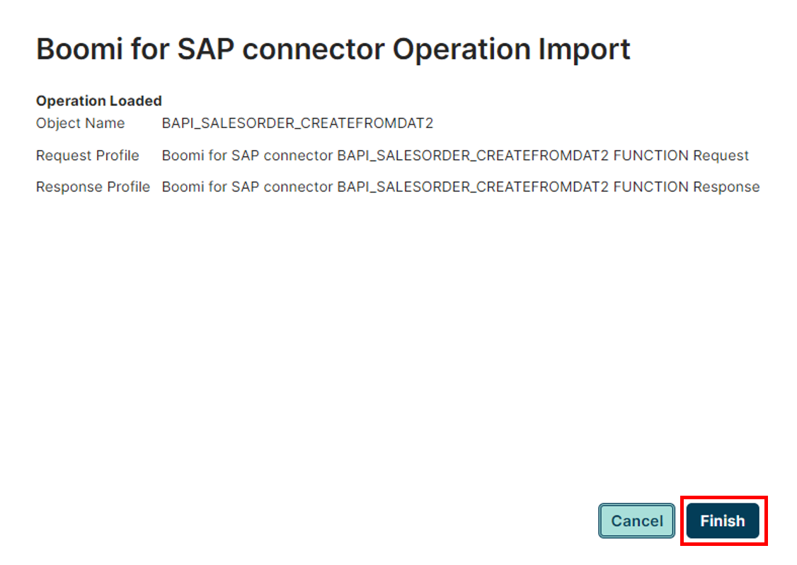
Profile generated — click Finish -
8
Click the pencil icon next to the Request Profile. In the profile editor, locate
ITM_NUMBERunder both T_ORDER_ITEMS_IN and T_ORDER_SCHEDULES_IN, and make sure the Field Length Validation checkbox is UNCHECKED for both.Why field lengths matter — and why you're relaxing this oneSAP fields are fixed-length, and the imported profile carries every field's exact SAP length so bad data is caught before it ever reaches SAP (an 11-character value aimed at a 10-character field would otherwise error inside SAP). That validation is normally your friend.
For
ITM_NUMBERyou switch it off because in Step 6 a map function will generate these line numbers, and the function's numeric output doesn't match the imported fixed-length format. Leaving validation on makes the process fail at runtime on data you know is correct.
Uncheck Field Length Validation for ITM_NUMBER -
9
Click Save and Close on the operation screen, then OK to finish configuring the shape and return to the canvas.
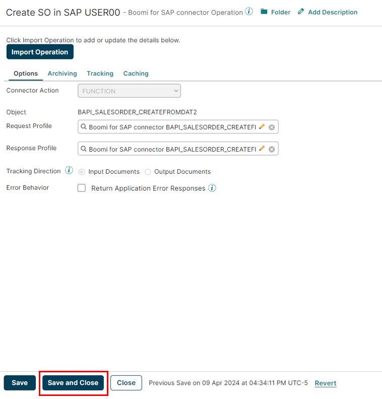
Save and Close the operation
Copy the Salesforce XML Profile
A map needs to know the shape of the data on both sides. The destination profile already exists — the import wizard generated it from the BAPI in Step 3. The source profile describes the Salesforce XML, and that's what you copy here. With both profiles in your folder, the map in Step 5 can show source fields on the left, SAP fields on the right.
-
1
In the Trainer folder, find the SF XML profile (e.g., SF Opp XML Profile). Right-click and copy it to your USERXX folder.

Copy the SF XML profile -
2
Give the profile a new name that includes your username (e.g., SF Opp XML Profile USERXX), confirm your folder selection, then click Copy.
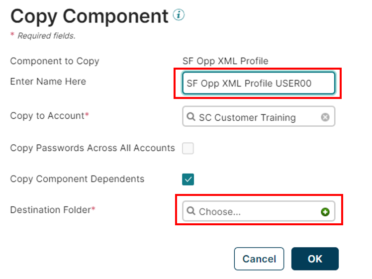
Name the copied profile
Configure the Map
The map is the translation layer: Salesforce speaks "opportunity and line items," SAP speaks "order header, partners, items, and schedules." Three values come from the payload (mapped fields); the rest are constants for this SAP system (default values). Getting clear on which is which is most of the work of real-world SAP integration.
-
1
On the canvas, click the Map shape to configure it, then click + to create a new map.

Map shape on canvas 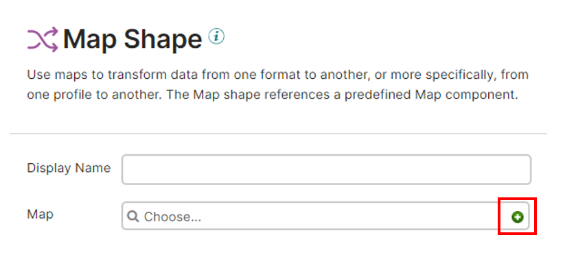
Create a new map -
2
Name your map (e.g., SF to SAP SO Map USERXX). In the Source panel, assign your SF Opp XML Profile USERXX. In the Destination panel, assign the Boomi for SAP BAPI_SALESORDER_CREATEFROMDAT2 FUNCTION Request profile.
Choose beats drag-and-drop — you can drag profiles into the panels, but clicking Choose, picking the profile type (XML / JSON), and browsing to the exact component is more reliable and avoids accidentally re-assigning a side. Most experienced builders use Choose.
Assign source and destination profiles -
3
Map these three fields by dragging a line from source to destination:
Source Element Destination Element What it carries Opportunity → Id I_ORDER_HEADER_IN → PURCH_NO_C The SF opportunity ID becomes the customer PO reference — your cross-system audit trail Opportunity → OpportunityLineItems → OpportunityLineItem → Quantity T_ORDER_SCHEDULES_IN → REQ_QTY Requested quantity per line Opportunity → OpportunityLineItems → OpportunityLineItem → PricebookEntry → ProductCode T_ORDER_ITEMS_IN → MATERIAL The product code — resolves to the synced SAP material Try Boomi Suggest — the Suggest button will propose mappings automatically. It's a great head start on big profiles, but always walk each suggested line and verify it before trusting it; a plausible-but-wrong suggestion is worse than an empty map. -
4
Now set constants on the destination side. Click a destination field, choose Set Default Value, and enter the value — repeat for each row below.

Setting a default value: click the destination field → Set Default Value → enter the constant Field Value Why I_IXBX_FORCE_COMMIT_OR_ROLLBACK XTells the Core to commit the BAPI's work. Without X, SAP rolls the transaction back and no order is saved — useful for dry runs, wrong for usI_ORDER_HEADER_IN → DISTR_CHAN 10The sales area — org 1710, channel10, division00— and order typeSOare the standard values for this SAP demo instance. They're constants here, so hardcoding is correctI_ORDER_HEADER_IN → DIVISION 00I_ORDER_HEADER_IN → SALES_ORG 1710I_ORDER_HEADER_IN → DOC_TYPE SOT_ORDER_PARTNERS → PARTN_ROLE AGAGis SAP's partner role for sold-to party — it declares that the partner number you'll map in Step 6 identifies who is buyingWhen you would NOT hardcode theseA real company with multiple sales orgs, channels, or divisions can't use constants — the right values depend on the deal. In that design you'd add a lookup in the map (a cross-reference table keyed on, say, the Salesforce account or region) that resolves the correct sales area per document. Same map, reusable across every org — that's the pattern to remember even though the demo instance only needs one set of values.
Map Functions: Line Item Increment & Leading Zeros
Two values SAP needs don't exist in the Salesforce payload at all — they have to be generated. Map functions do that inline, and both of the ones you'll use here are classic SAP integration patterns you'll reuse on every project.
-
1
Still inside the map, click Add Function. Choose category Numeric and select Line Item Increment — this is a standard built-in function.
Why increments of 10?SAP numbers order lines 10, 20, 30… — a convention as old as SAP itself. The gaps let users and programs insert corrections between existing lines without renumbering the document, and every SAP user expects to see it. The function takes each incoming line and stamps 10, 20, 30… onto it.
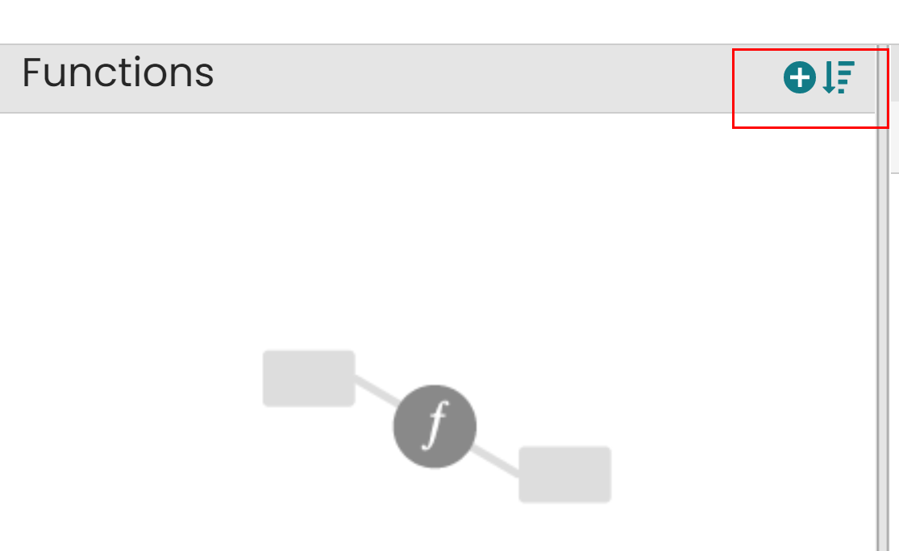
Add Function → Numeric 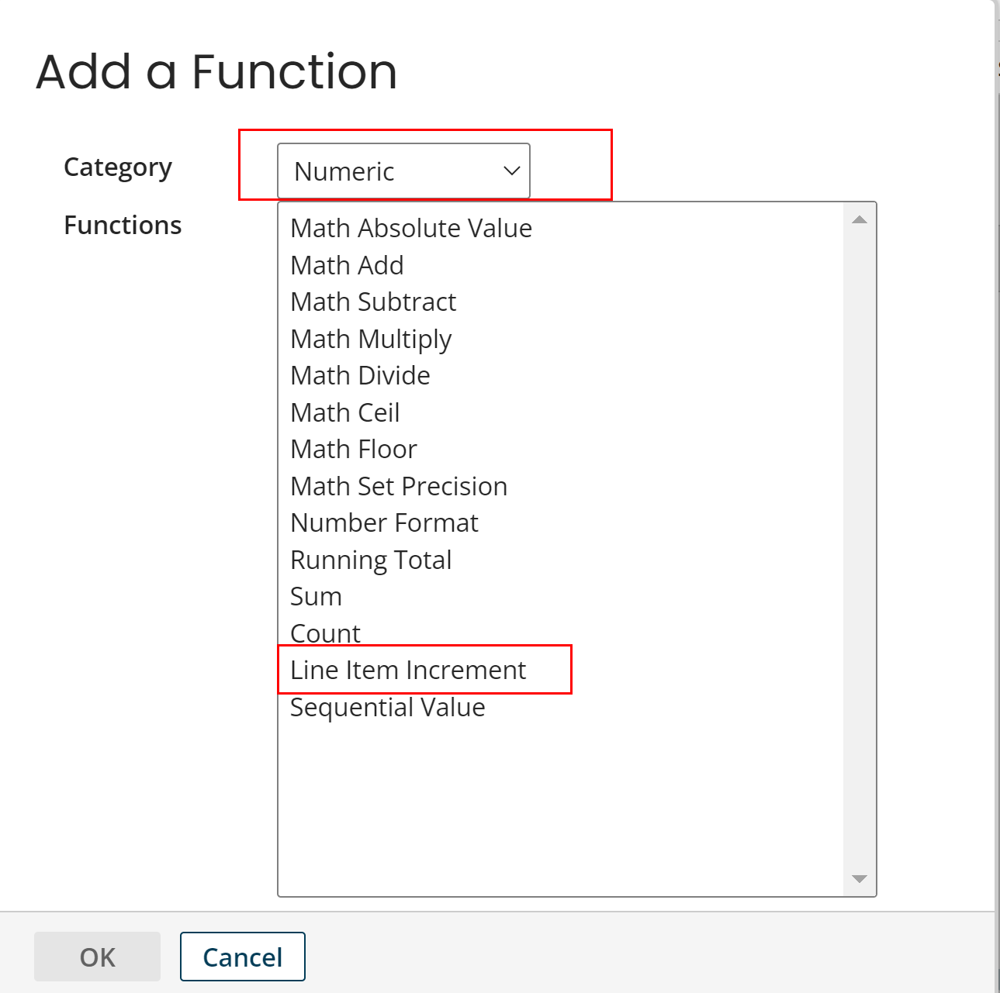
Choose Line Item Increment -
2
Configure the Line Item Increment defaults as shown:

Line Item Increment configuration — increment by 10 -
3
Wire the function into the map: drag PricebookEntryID (path:
Opportunity → OpportunityLineItems → OpportunityLineItem → PricebookEntryID) to the function's input, then map the function's output to ITM_NUMBER in bothT_ORDER_ITEMS_INandT_ORDER_SCHEDULES_IN.The input just gives the function one trigger per line item — each occurrence produces the next increment. This is also why you unchecked Field Length Validation on
ITM_NUMBERin Step 3: the generated numbers don't match the imported fixed-length format. -
4
Now build the second function yourself. Click Add Function again and create a new String function using String Pad Left (name it Add Leading Zeros USERXX) with:
Setting Value Function type String Pad LeftFixed Length 10Pad Character 0Why SAP needs leading zerosSAP stores customer numbers as fixed 10-character keys, zero-padded — customer
17100001lives in the database as0017100001. The SAP GUI hides the zeros, so people forget they exist, but the BAPI matches on the stored value: send the unpadded number and SAP simply won't find the customer. (You can verify this from SE16 on the KNA1 table — the zeros are really there.)Salesforce sends the human-readable number, so the map pads it. Build the function once and it's reusable in every map in your account — you never think about zeros again. The mirror-image trick also matters: going SAP → elsewhere you'd trim the zeros with the same technique.
Fallback — if you get stuck, a pre-built Add Leading Zeros to SAP Customer ID function is in the Trainer folder; copy it to your USERXX folder and drag it onto the map instead.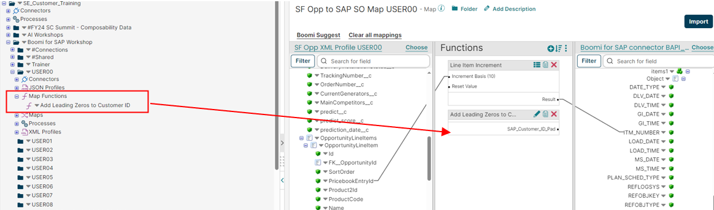
The leading-zeros function placed on the map -
5
Wire the customer number from the source profile into the function's input, and map the function's output to T_ORDER_PARTNERS → PARTN_NUMB (the sold-to partner declared by the
AGrole you set in Step 5). Then click Save and Close, and OK to return to the canvas.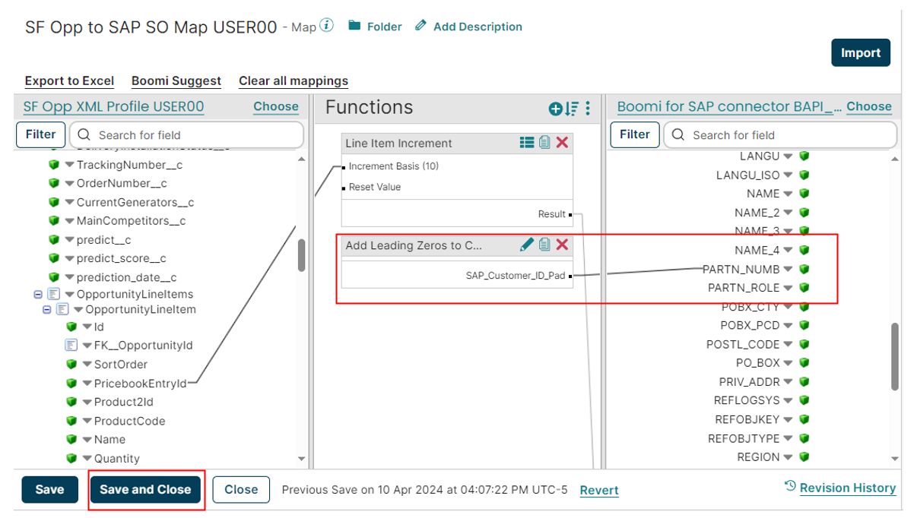
Leading-zeros output mapped to PARTN_NUMB
Surface the BAPI Response — the Sales Document Number
Calling a BAPI is a conversation, not a fire-and-forget. BAPI_SALESORDER_CREATEFROMDAT2 returns the number of the document it just created in its E_SALESDOCUMENT export — plus a RETURN table of messages. This step pulls that number out of the response profile and displays it, which is how you'll prove the order exists.
In production you'd go one step further: map E_SALESDOCUMENT into a Salesforce update and write the SAP order number back onto the opportunity — sales sees the SAP order without leaving their CRM, and the two systems stay cross-referenced. We display it instead of writing back to keep the shared demo org clean, but the response element you're using here is exactly the one you'd use for the write-back.
-
1
On the canvas, click the Display Sales Document Message shape to configure it.

Select the Display Sales Document shape -
2
Click the + icon in the Message Shape configuration window to add a dynamic field.

Add a dynamic field to the message -
3
On the Parameter Value screen, fill in the following:
Field Value Type Profile ElementProfile Type JSONProfile Boomi for SAP BAPI_SALESORDER_CREATEFROMDAT2 FUNCTION ResponseElement E_SALESDOCUMENT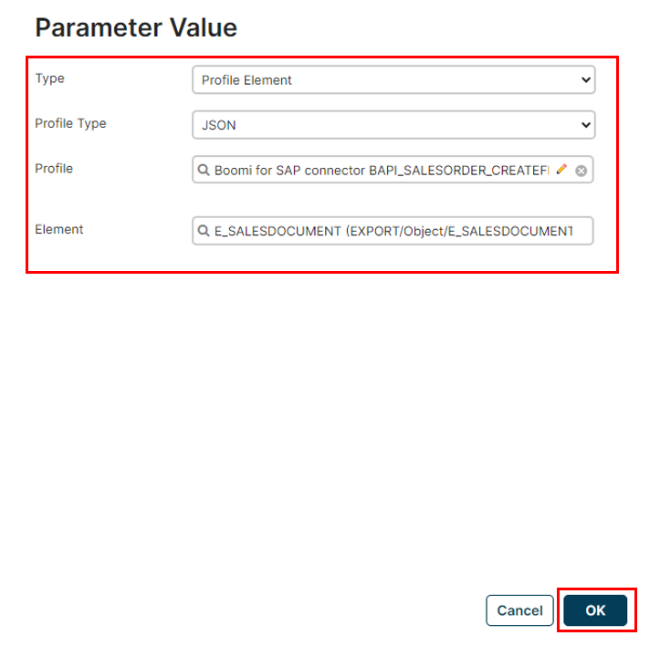
Parameter value configuration — pulling E_SALESDOCUMENT from the response -
4
Click OK and then Save the process.
Test & Verify End-to-End
This process starts from a Message shape, so nothing fires it automatically — Test mode is how you push the XML through. That's deliberate for the lab: the Message shape stands in for the Salesforce listener that would trigger the process in production, letting you exercise the whole flow on demand.
-
1
Save the process, then click Test on the canvas toolbar.

Save and Test the process -
2
In the test panel, select the appropriate Atom and start the test run. After execution completes, open the process logs.
-
3
In the logs, locate the output of the Display Sales Document shape. You should see a 10-digit SAP Sales Document number — the BAPI's response confirming the order was created.

The Sales Document number returned by the BAPI Success! If you see a Sales Document number (e.g.,0000007220— note the leading zeros!), the exercise is complete. If you see an error, re-check the default values (Step 5) and the Field Length Validation setting on ITM_NUMBER (Step 3).
Your trainer will now show the same flow running for real: flipping an opportunity to Closed Won in Salesforce, watching the live-triggered execution land in Process Reporting, and then opening the new order in SAP (VA03). Look at the order lines — they're the exact products you read in the XML back in Step 2. Salesforce sent the deal; SAP created the order; nothing was typed in between.